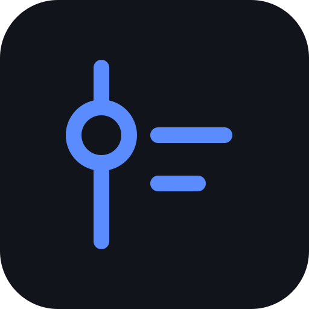

Enter your PIN to continue.
or
Nothing on the wheel yet — add some options below.
It landed on
This token can reach every repo you own. A token limited to your data repo does the same job: Change token, follow step 2, paste it, then delete the old token on GitHub and open a new setup link on your other devices.
Every save becomes a commit in a private repo, so your devices stay in sync and you get a history. The token stays on this device, and one made for that repo alone can't touch anything else of yours.
Scan the code with the new device's camera, or open the link there. In the LifeLog app use Scan QR code instead — the camera opens links in the browser, not the app.
You're on a local/localhost URL, so this link only works on this computer. Open your published site (e.g. GitHub Pages) and copy the link from there to use it on other devices.
The setup link is too long for a QR code — use the copy button below to share it instead.
The link contains your access token — only share it with your own devices.
Keeps dated copies of everything in your Drive, apart from GitHub. LifeLog can see only the files it makes there, nothing else in your Drive.
A copy of everything goes to a LifeLog folder in your Drive: entries, notes, boards and the watchlist, without your API keys. The last three are kept, plus one a week old when backups run more often. LifeLog can see only the files it made there. Restore replaces your data with the backup's as a new save, so History can undo it.
Every save is also written to a LifeLog folder the Files app can see (where is on the line above), with one copy a day for the last two weeks in daily. On Android it stays even if the app is cleared or uninstalled. To bring one back: Import & export → Everything → Import, and pick the file.
Every save is also written to a .json file on this computer — a local backup, or a way to sync through a shared Drive/Dropbox folder. Boards are a file of their own; put boards.json beside the data file. Chrome and Edge on a computer only.
Your data stays on this device and on GitHub.
Your data is measured on this device as it's saved. GitHub's total is packed smaller and also holds every earlier save, so the parts won't add up to it exactly, and History is what's left over: a rough figure.
Importing adds to what you have, never replaces it, and lets you pick what comes in first. Anything you already have is skipped. JSON keeps everything; CSV is for spreadsheets and keeps what fits in a row, so an entry's cover, rating and notes stay behind. A tab's import takes its own part of any LifeLog file, a full backup included.
CSV import also reads the yearly pivot a Google Sheets export makes: year blocks, 12 month columns, a note on each real transaction. A purchase recorded against a year rather than a month lands on 1 January.
Your last ~40 saves, plus older ones from GitHub when it's connected. Undo takes back one change; Restore rolls everything back to that save. Neither deletes anything here.
No saves yet — your history will appear here once you make your first change.
Anything deleted within your save history. Restoring one brings back just that item.
Nothing recently deleted.
Boards keep their own history. Open a version to see its boards and bring back any that have changed or gone since.
This device only. It keeps people out of the app; it doesn't encrypt your data.
After five wrong PINs the lock waits half a minute, and longer with every miss.
Both take effect while Require unlock is on.
Forgot it? The lock screen can wipe this device's copy; reconnect sync afterwards to get your data back.
Fingerprint/Face ID isn't available on this device or browser.
On top of the PIN, which stays as the fallback.
This device only. Cover art, month cards and each list's options are on that tab's View button.
Every device. Date boxes show this format too; the calendar that opens from one follows your phone's or browser's language.
This device only. The arrows reorder, the star is the mode a tab opens on — with three modes, the middle one. Tabs you turn off leave the tab bar.
Where covers, ratings and release dates come from. Syncs to your other devices.
The fallback is tried when the source finds nothing; Sync on an item searches both. "Steam" takes an App ID from the store URL. "RAWG + Steam + GG.deals" (or IGDB's) also finds the Steam ID, for a price too. IGDB makes a good fallback for RAWG.
Open Library, AniList, Jikan, Google Books and MusicBrainz need no key.
Setup is in proxy/README.md. Leave it blank if you use none of those.
The Android app reaches these itself and doesn't use the proxy. Keep it set if you use them in a browser too.
Apps that keep LifeLog in step. Pick one to set it up and choose what comes in; nothing already here is added twice.
Keeps your Hardcover library and one category in step. Books already in it are matched by title and author. When a book changed on both sides, the newer change wins, and Waypage starting or finishing one counts as a change here. Deleting a book here never deletes it on Hardcover. Uses your Hardcover token from Media lookups: it needs access to your library, so make one with only that if Hardcover lets you pick.
Keeps your lists and LifeLog in step. Planning comes in as backlog items, Watching as in progress with its episode count, Completed goes to your timeline on the day AniList has it finished, and Paused or Dropped come in dropped. When a title changed on both sides, the newer change wins; with no time to go by, the further one does (Completed over Watching, more episodes over fewer). Completed titles AniList has no dates for wait for you to review. Removing something here never removes it on AniList. Needs no key, but until you sign in below the lists must be public (AniList → Settings → Lists → untick "Set anime/manga list to private"). Set one side to "Don't import" to sync only the other.
Sends your episode counts, starts, finishes and drops back to AniList. Once: on anilist.co open Settings → Developer → Create new client, name it LifeLog, set the redirect URL to https://anilist.co/api/v2/oauth/pin and save. Paste its ID above, press Sign in, approve, and paste the token AniList shows you here. The token lasts a year and can change anything on your AniList account, so it syncs like your other keys but is left out of exports; delete the client on AniList to cut it off. Titles you add here after signing in are added to your AniList lists too.
Reads your Stremio library and never changes it. Your library comes in as backlog items, what you're partway through as in progress with the episode you're on, and watched movies go to your timeline on the day you last played them (Stremio keeps only the last play). Everything goes through the review; an automatic check only offers it. Titles are matched on TMDB when you have a TMDB key. Your password is only used to sign in: the key Stremio sends back syncs like your other keys and is left out of exports. It can change anything on your Stremio account, and Sign out ends it. This is the API Stremio's own apps use; it isn't public and may change.
A row on Stremio's home screen with the movies and shows waiting in your Backlog, starred first. Tap one and it opens in Stremio as usual. It's an add-on your proxy worker serves at a secret address: LifeLog sends it only each title's IMDb id, name and poster, and anyone with the add-on link could see that list. Add to Stremio opens the Stremio app; on the web, copy the link and paste it into Stremio's add-on search. Shows from TMDB need your TMDB key to find their IMDb id.
In Waypage turn on Settings › GitHub sync › Other apps › Share reading activity. Make a token opens GitHub with the name and Contents: Read-only filled in: pick waypage-data under Repository access, generate it and paste it here. It syncs like your other keys. Turning Read from Waypage off stops reading it on every device and keeps everything it brought in; Disconnect also forgets the token.
A book already in your backlog is matched by title and author. Finishing it in Waypage puts it on your Timeline on that day; one already on your Timeline waits above for you to say whether it's a re-read. Reading and listening minutes fill the minutes habit you pick, on top of what you add by hand.
Unlink keeps the book here and stops Waypage changing it.
Books you said Never to or unlinked. Allow again brings each back at the next check.
Your wishlist must be public (Steam → Privacy Settings → Game details), and this goes through the CORS proxy on Media lookups.
A one-time backfill: every game with time in it becomes a Timeline entry in the month you last played it, with the hours as its length, in the wishlist's category. Steam doesn't know what you finished, so you review the list: two hours or more starts ticked. Game details must be public, like the wishlist.
Retry looks up again the items still called "Steam app <id>" (usually Steam rate-limiting a large first sync) and fixes the ones that resolve.
Backfill fills in what Steam-synced games lack: rating, length and year from RAWG (needs a RAWG key), and Steam's description (needs the proxy). Never touches title, cover or App ID.
For games with a Steam App ID: the Main Story, Main + Extras and Completionist times from How Long to Beat, and the review scores, through Augmented Steam's API and the CORS proxy. Main Story becomes the game's length unless you pinned it. Only the App ID is sent. With IGDB keys set, IGDB's time-to-beat stands in where How Long to Beat has nothing, and for games picked from IGDB that aren't on Steam. A game is checked again once its times are older than the interval you pick here.
On Letterboxd: Settings → Import & Export → Export your data. Pick the zip it gives you (or its CSV files). Your diary and watched films become Timeline entries on the day you saw them, with your stars; the watchlist goes to the Backlog. You review the list before anything comes in.
Shows your Google Calendar's events on the Timeline's calendar, read only: LifeLog never changes your calendar. Tap an event to copy it into LifeLog as an entry, a task or a note. Google shows a "Google hasn't verified this app" page first: choose Advanced, then go on to LifeLog.
Not available here: Google sign-in needs the app, or the web app at its https address.
The events stay on this device and aren't synced with the rest of your data, so each device connects on its own. In a browser the sign-in lasts an hour; after that the calendar shows the last copy until Sync now.
When you pay with this phone, LifeLog offers to add it. Add files it where that place went last time; tapping the offer opens the form filled in. A payment in another currency only opens the form, for its rate.
Android has to give LifeLog notification access for this, which lets it see your notifications. It reads only Google Wallet's, and nothing leaves the phone. If Android says the setting is restricted, open LifeLog's App info, tap ⋮ and choose Allow restricted settings, then try again.

What you did, what's next, what it cost. Yours, on your devices and in your own GitHub repo; nothing goes anywhere you didn't set up.
Each one is asked only for what you add or connect, with the keys and accounts you set up under Connected services.
Click a key to change it, × to turn it off. Your keys sync, so the browser and the desktop app match.
These only work while a board is open, so they can share keys with the rest of the app.
Plain keys only work when you're not typing in a field. Keys with Ctrl or Alt work anywhere.
How LifeLog runs on this computer.
Quit in the tray's menu always stops it. Anything due while it wasn't running rings when it opens again, if it's under an hour late (12 hours for the 9:00 heads-ups).
Everything LifeLog keeps on this computer, your GitHub token too. Changing it restarts LifeLog and copies it all over; the old copy stays until you remove it. Uninstalling asks whether to delete it. Avoid a OneDrive or Dropbox folder: syncing it while LifeLog is open can damage it, and your token would go along.
What this phone may ring. Each kind is also its own channel in Android's notification settings, where its sound and importance are set.
These ring only while LifeLog is running, in its window or the tray. Settings → Desktop has Start at login.
Android decides the exact moment, and waits for a connection; while the phone is dozing a check can slip by an hour or more. Each run costs a little battery.
Asks the source again about each backlog item that's still to come, and each show that hasn't finished airing: its date, its next episode and how many episodes are out. Changes nothing else. Steam, RAWG, TMDB and AniList items only.
Sections
This device only. On a computer, drag a section by its heading: into a row to share it, or between rows to start a new one.
The breakdown is a line per category under a month, with how many entries it got. A month with one category doesn't need it.
Separately reads 300 (+12 EA, +43 unreleased, +8 dropped) rather than 363 — the first number is what you could start today.
Whether each block at the end of a category can fold behind a bar like ▸ Unreleased 12, and how it starts. A folded block isn't drawn at all.
This device only. Tasks always open ready to edit.
Hiding it changes nothing else: each habit's card still shows what's left. This device only.
The breakdown is a line per category under a month, with what you spent on each. Everything here but the currency is this device only.
In pixels, and shared by the Timeline and the Ledger.
Plain keys only fire when you're not typing in a field, so they stay out of the way of titles, notes, and search.
Keep it as
This is unusual — normally differences between devices merge on their own. Pick the version to keep and it'll be copied to the others; nothing is deleted, so anything unique to the version you don't pick may still be recoverable from Settings → History afterwards.